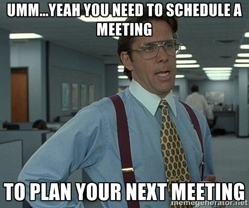

Based on the book by JJ Sutherland
Presentation created by Nicholas Mackey
Web: nmackey.com / Twitter: @nicholas_mackey / Github: nmackey
Not a detailed book about scrum implementation.
Everybody loves origin stories!
Plan out the next x years
gant charts
"Stick to the plan!"
Not adaptive
Change is difficult and time consuming or not allowed
Doesn't provide value
Usually we don't know everything
Evolutionary
Adaptive
Self Corrective
Small teams
Prioritized tasks
Daily stand-ups
Makes room for change.
Encourages people to provide value
Eliminates waste
Usually we don't know everything
You want to discover problems as soon as possible.
You want to figure out what you don't know.
Autonomous
Cross Functional
Empowered
small (7 +/- 2)
Look for ways to improve your team performance
Think about the great teams you have been a part of or that you know.
"Time is finite, treat it that way."
One meeting a day - 15 minute standup
Context switching is difficult and takes time.
Fix issues right away
It costs less and saves time
Removing impediments
Working long hours gets less done
Don't be unreasonable
No heroics
No stupid policies
Plan for reality not fantasy
Writing a story is about determining value
As a (who)
I need (what)
So that (why)
Independent
Negotiable
Valuable
Estimable
Small
Testable
People suck at abosolute sizing
People are good at relative sizing
Once you know how fast you are going you will know when you are going to get there.
Are you improving?
When implemented well production can increase substantially.
Delivering value
Make a list of everything for the project and prioritize it.
Highest value and lowest risk at the top
80% of the value is in 20% of the work
What needs to be done and why
How and who
Create new things only as long as they deliver value
Be willing to swap them for things of equal effort
What is needed in the beginning is never what is actually needed
"Too often we just reward results, but what we really want to reward is people striving towards greatness"
Smarter decisions
More creative
Retention
Accomplish More
Every sprint we should be trying to get better at something
Secrecy is poison
Presentation online at nmackey.com/presentation-scrum/ Slides available at github.com/nmackey/presentation-scrum